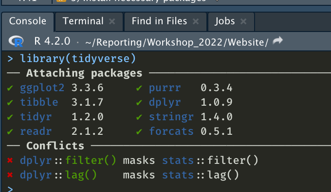

R Markdown Workshop
May 24, 2022
Date
May 24 – 25, 2022
Time
9:00 AM – 3:00 PM
Location
remote
Event
Educational Series for Behavioral Researchers in the Netherlands, Kurt-Lewin Institute
Preparation
1) Install R
Please make sure that you have a recent R version installed.
You can check your R Version in the Console (in RStudio) by typing:
R.version.string

If you are using an older R version, please install the newest R version.
2) Install R Studio
Go to the RStudio website and download the newest version if you are using an older version of RStudio (if in doubt, better update!). Simply follow the download instructions. The new version will be available next time you open RStudio.
3) Install necessary packages
You need several R packages for the workshop. Please make sure to install these packages before the workshop. The easiest way to do so is by running this code in R:
cran_packs <- c("learnr", "bookdown", "stargazer",
"officer", "rticles", "webshot",
"tidyverse", "remotes", "magick",
"kableExtra", "vtable", "devtools")install.packages(cran_packs, dependencies = TRUE)github_packs <- c('rstudio/blogdown',
'haozhu233/kableExtra', 'crsh/papaja')remotes::install_github(github_packs, dependencies = TRUE)Once these packages are installed, you may use blogdown to install the Hugo package. Hugo is a static site generator that we will use to build blogdown paged. You may install Hugo using blogdown, like so:
blogdown::install_hugo()You can check whether the installations were successful by running library(package_name). All installed packages must be loaded before we can use them during the workshop.

4) Set up Git and GitHub
To make the most out of the workshop, I highly encourage you to install Git and to create a GitHub account for version control. Follow the instructions from the Happy Git with R Book and the official GitHub guides:
Install Git. Follow the instructions under Setting up Git (do not use the Desktop client). For Windows Users: Follow the installation instructions for Git here.
Once this is done, you are all set for the workshop! 🎉
5) Sign up on osf
Many social scientists use osf to store their data or code. It is possible to integrate your GitHub repositories into osf. Please sign up on osf before the workshop.
Slides
Day 1
Available upon request.
Day 2
Available upon request.
Schedule
🗓️ Dates:
24th & 25th May 2022
🕛 Timetable for Day 1:
| Unit | When | What |
|---|---|---|
| 09:00-09:30 | 🖐 WALK-IN and final installation support | |
| Session #1 | 09:30-10:15 | Introduction to R Markdown |
| 10:15-10:30 | 🍵 BREAK | |
| Session #2 | 10:30-11:15 | R Markdown - Text, code, reference management |
| 11:15-11:30 | 🍵 BREAK | |
| Session #3 | 11:30-13:00 | R Markdown - extended options and project organisation |
| 13:00-13:40 | 🍔 LUNCH BREAK | |
| Session #4 | 13:40-15:00 | R Markdown - building your own project |
🕛 Timetable for Day 2:
| Unit | When | What |
|---|---|---|
| 09:00-09:30 | ❓ Q & A | |
| Session #1 | 09:30-10:15 | Version control with Git & GitHub - the basics |
| 10:15-10:30 | 🍵 BREAK | |
| Session #2 | 10:30-11:15 | Version control with Git & GitHub - collaborating; Integration with osf |
| 11:15-11:30 | 🍵 BREAK | |
| Session #3 | 11:30-13:00 | Blogdown - build your own project websites |
| 13:00-13:40 | 🍔 LUNCH BREAK | |
| Session #4 | 13:40-15:00 | Other R (Markdown) tools, final Q & A |